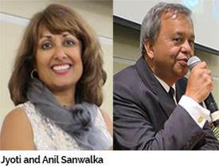
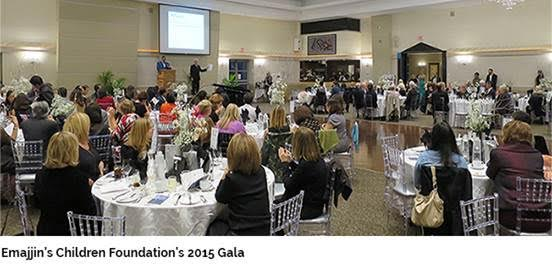

About
Emajjin Children's Foundation is a registered Canadian charity managed by a voluntary Board of Directors.
We are committed to supporting children who are disabled or disadvantaged. We strive to partner with organizations that direct their energies towards enhancing the lives children with disabilities reach their full potential.
Our goal is to maximize support in the community ONE CHARITY AT A TIME.
Our story
ProSoft Employee's Foundation Recipient of Belden's Matching Gift ProgramJune 20, 2016
Giving back to the community can be a worthwhile endeavor, an opportunity to improve the lives of others and a chance for an individual to be an active part of their community. For ProSoft's, Anil Sanwalka, senior engineer, philanthropy has taken on a new level of importance. Sanwalka and his wife, Jyoti, are the founders of the Emajjin (EE-MAJ-JIN) Children's Foundation, a recent recipient of Belden's matching gift program.
Sanwalka, who joined ProSoft in 2012, and his wife established the foundation nearly three years ago after being inspired by their special needs child.
The couple wanted to create a foundation centered on providing assistance for children's charities through a focus on fundraising. Each year, Emajjin selects one partner charity to benefit from the foundation's yearly fundraising campaign. In 2015, Emajjin partnered with the Pathways to Education organization. The foundation was able raise over $20,000 for Pathways to Education after receiving a contribution from Belden's matching gift program.
After reading about the matching program in a letter from John Stroup, Sanwalka reached out about having Emajjin selected as a recipient of the program.
"I didn't know anything about the matching gift program and then I got John's letter describing the it," said Sanwalka. "I reached out to John with an email and within a couple of hours, he had responded to me. I got an email saying we were eligible to do this and that was it."
The selection as a matching program recipient happened to coincided with Emajjin's annual fundraising gala. Each year, the foundation holds a fundraising gala focused on that year's chosen charitable partner. At Emajjin's 2015 gala benefiting Pathways to Education, Sanwalka was inspired to drive more donations, after knowing that Belden would be matching Emajjin's donations
"While we were at the gala, I was thinking about Belden doubling my contribution, so I went up on stage and said I'll match anybody who puts in up to $1,000," said Sanwalka. "Within five minutes, I had $1000. So I said I'll go up to $2000, and I got that. So with my individual contribution, the attendees' matching contributions and Belden's matching contribution, we raised over $9,000 in total donations."
The funds donated to Pathways to Education will allow the non-profit to continue to ensure that Canadian students finish high school. The mission of organization is to identify at-risk students and work to develop plans to provide those students with needed supplies to make sure they graduate high school.
Following the success of the 2015 fundraising campaign for Pathways to Education, Sanwalka said he looks to continue the work of the Emjjain Children's Foundation in funding charities making a difference in the lives of children.
"My wife and I have been very fortunate in our life, we have everything we could every need, and you see so many people that have needs that can't be met. There are people who have the capability to help those individuals, who have ability to do great things and just need the funds. Our goal is provide these good causes with the funds to do these things."
